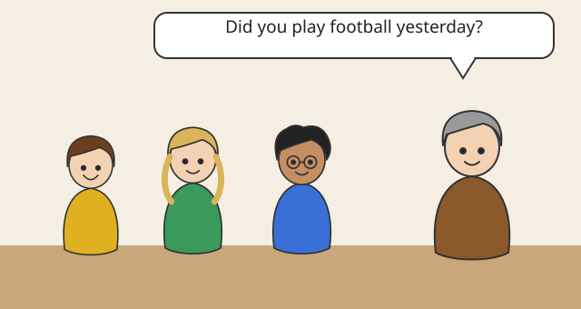
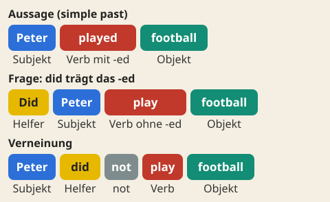

Did you play football yesterday?
Mit einem KI-Tutor lernen
Ein KI-Tutor erklärt dir diese Seite und hilft dir bei den Aufgaben. Wähl deinen Assistenten:
Mit Claude öffnen Mit ChatGPT öffnen Mit Mistral Vibe öffnen
Du nutzt dein eigenes Konto beim Anbieter. Der Assistent ist kein Angebot von lernapps.net: lernapps liefert nur Inhalte und Aufgaben. Die Wahl gilt für alle Seiten, nur auf diesem Gerät.
Mr Hill fragt nach gestern

© CC-BY-4.0Von links: Peter (gelbe Jacke), Sophie (Zöpfe) und Amir (Brille) hören zu. Rechts fragt Mr Hill (graue Haare).
Mr Hill fragt Peter: „Did you play football yesterday?“ Peter überlegt.
Aufgabe
Lösung
Ob Peter gestern Fußball gespielt hat. richtige Antwort
Yesterday heißt „gestern“. Did zeigt, dass es um etwas Vergangenes geht.
Ob Peter jeden Tag Fußball spielt.
Dann würde Mr Hill Do you play football every day fragen.
Ob Peter morgen Fußball spielt.
Morgen heißt tomorrow, nicht yesterday.
Did und yesterday sagen beide, dass es um die Vergangenheit geht.
Das kannst du danach: Du fragst und verneinst in der Vergangenheit und weißt, warum das Verb dabei kein -ed hat.
Der Helfer geht in die Vergangenheit
Der gelbe Helfer hat eine neue Form: did. Er sagt, dass es um früher geht, und trägt das -ed. Darum bleibt das Verb in der Grundform. Did gilt für alle Personen, auch für he, she und it.

© CC-BY-4.0Aussage, Frage und Verneinung im simple past. Das -ed wandert zum Helfer did.
| Person | Frage | Verneinung |
|---|---|---|
| I / you / we / they | Did you play? | You didn't play. |
| he / she / it | Did Ellie play? | Ellie didn't play. |
Merke
Did trägt das -ed, das Verb geht ohne. Did Ellie walk to school? Nicht „walked“. Didn't ist did not.
Einige Verben haben eine eigene Form, zum Beispiel ate (von eat) und went (von go). Auch dann geht das Verb nach did in die Grundform: Did Sophie go home? Nicht „went“. Die Kurzantwort nimmt did mit: Yes, I did. No, he didn't.
| Englisch | Deutsch |
|---|---|
| play – played | spielen – spielte |
| watch – watched | anschauen – schaute an |
| study – studied | lernen – lernte |
| eat – ate | essen – aß |
| go – went | gehen – ging |
| yesterday | gestern |
| what | was |
| football | Fußball |
| pizza | Pizza |
| film | Film |
| English | Englisch |
| home | nach Hause |
| walk – walked | gehen – ging zu Fuß |
| at school | in der Schule |
| at home | zu Hause |
| a film | ein Film |
| after school | nach der Schule |
| did not | nicht (Vergangenheit) |
Übung
Aufgabe
Lösung
Richtige Antwort: 1. Did, 2. Amir, 3. watch, 4. a film, 5. yesterday
Der Helfer Did kommt zuerst, dann das Subjekt, dann das Verb in der Grundform, das Objekt und die Zeit.
Aufgabe
Wähle den Helfer und die Form des Verbs.
Tipp
Der Helfer did trägt die Vergangenheit. Das Verb steht danach in der Grundform.
- Hat Peter gestern Fußball gespielt? → … Peter … football yesterday?
- Hast du gestern Pizza gegessen? → … you … pizza yesterday?
- Hat Ellie gestern gelernt? → … Ellie … yesterday?
Lösung
- Did Peter play football yesterday?
- Did you eat pizza yesterday?
- Did Ellie study yesterday?
Aufgabe
Schreibe die ganze Frage. Denke an den Helfer.
Tipp
Schreibe did, dann das Subjekt, dann das Verb in der Grundform.
- Sophie · go · home · after school
- you · watch · a film · yesterday
- Ellie · eat · pizza · yesterday
- Amir · study · English · yesterday
Lösung
- Did Sophie go home after school?
- Did you watch a film yesterday?
- Did Ellie eat pizza yesterday?
- Did Amir study English yesterday?
Aufgabe
Verneine den Satz mit didn't.
Tipp
Der Helfer didn't steht vor dem Verb. Das Verb geht ohne -ed.
- Amir played football.
- I ate pizza.
- Ellie went home.
Lösung
- Amir didn't play football. (auch richtig: Amir did not play football.)
- I didn't eat pizza. (auch richtig: I did not eat pizza.)
- Ellie didn't go home. (auch richtig: Ellie did not go home.)
Aufgabe
Schreibe den Satz auf Englisch.
Tipp
Frag dich, ob es um früher geht. Dann kommt did, und das Verb bleibt in der Grundform.
- Hat Amir gestern gelernt?
- Ellie hat gestern nicht Fußball gespielt.
- Was hast du gestern gegessen?
Lösung
- Did Amir study yesterday? (auch richtig: Did Amir learn yesterday?)
- Ellie didn't play football yesterday. (auch richtig: Ellie did not play football yesterday.; Yesterday Ellie didn't play football.; Yesterday Ellie did not play football.)
- What did you eat yesterday?
Aufgabe
Hör zu und schreibe, was du hörst.
- KI
- KI
- KI
Lösung
- Did Peter eat pizza at school yesterday?
- Sophie didn't watch a film yesterday. (auch richtig: Sophie did not watch a film yesterday.)
- What did Amir study after school?
Was habt ihr gestern gemacht?
Aufgabe
Hör zu, sprich nach und nimm dich auf. Vergleiche dann mit dem Original.
Tipp
Hör den Satz zuerst. Sprich dann langsam nach. Achte darauf, dass das Verb nach did ohne -ed bleibt.
- Did Ellie and Peter go home yesterday?KI
- Amir didn't play football at school.KI
- What did Sophie eat at home?KI
Zum Aufnehmen braucht diese Aufgabe JavaScript. Die Beispiele kannst du auch ohne anhören.
Lösung
- Did Ellie and Peter go home yesterday?
- Amir didn't play football at school.
- What did Sophie eat at home?
Offene Aufgabe
Mr Hill will wissen, was die Klasse gestern getan hat. Schreibe zwei Fragen mit Did an Sophie, Ellie, Peter oder Amir und einen Satz mit didn't über eine der Personen.
Eine gute Antwort enthält:
Lösung
Did Peter play football yesterday? Did you watch a film? Amir didn't eat pizza at school.
Wie es weitergeht
Ellie zeigt Sophie ihre Zeichnung und sagt etwas mit einer kleinen Frage am Ende des Satzes. Wie sie gebaut ist, zeigt die nächste Seite.
Fehler gefunden oder eine Idee für diese App?